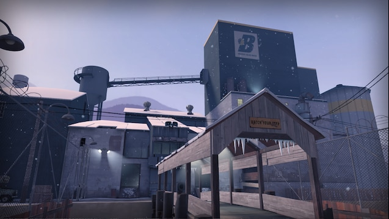
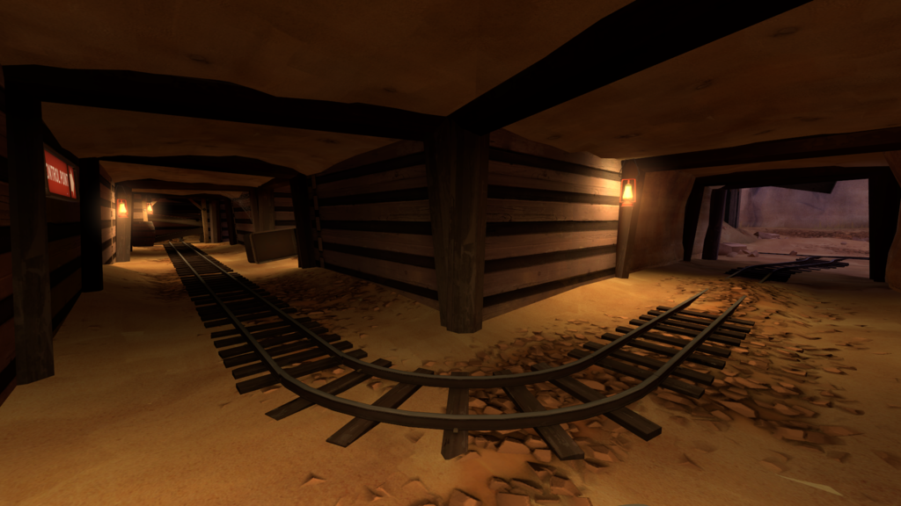
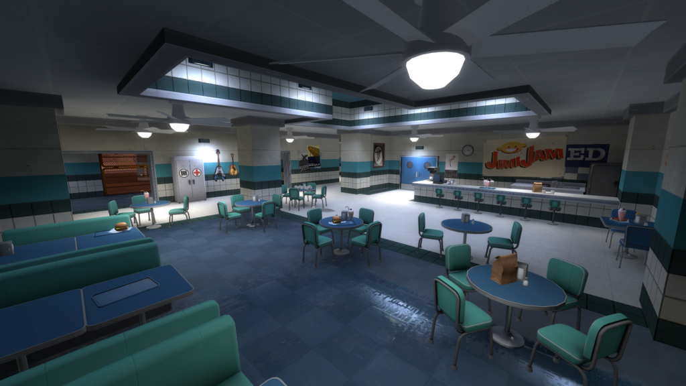

SERVICIOS
A pesar del nombre de la empresa, Builders League United no se quedó unicamente en la construcción, sinó que durante los ultimos 50 años se expandió para abarcar otros campos inesperados. Demosle un vistazo a estos:

A pesar del nombre de la empresa, Builders League United no se quedó unicamente en la construcción, sinó que durante los ultimos 50 años se expandió para abarcar otros campos inesperados. Demosle un vistazo a estos:

Fabrica construida en algún lugar de Teufort, Nuevo México.
La ACTIVIDAD PRINCIPAL de la empresa; buscamos desarroyar cada proyecto de forma impecable, cumpliendo con los mínimos estándares y manteniendo la estética deseada.
No solo deteniendonos en eso, También poseemos con un equipo de expertos en la gestión de proyectos que pueden reducir al mínimo tanto el costo como el tiempo de cada etapa.

Mina de Builders League United en Nuevo México.
También distribuimos una variedad de MATERIAS PRIMAS extraídos por nosotros mismos; como puede ser una gran variedad de metales( como pueden ser el hierro, oro y cobre), arcilla, arena, grava grava liquida.
Hemos logrado distribuir nuestra materia tanto para el armado de las vías del tren de Teufort como para una gran variedad de empresas locales del pueblo.

local de comida rapida anexado a BLU.
Este es uno de los servicios más recientes de Builders League United; la distribuición una gran variedad de PRODUCTOS ALIMENTICIOS mega-procesados a subempresas anexadas a BLU.
Nuestros productos Alimenticios se volvieron los unicos consumidos dentro del pueblo de Teufort.